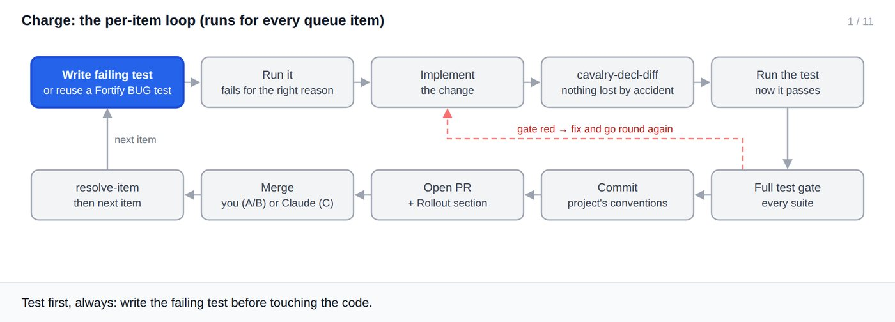
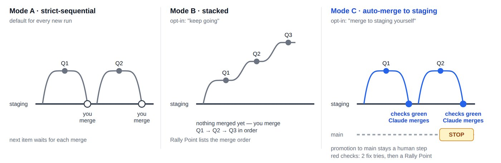
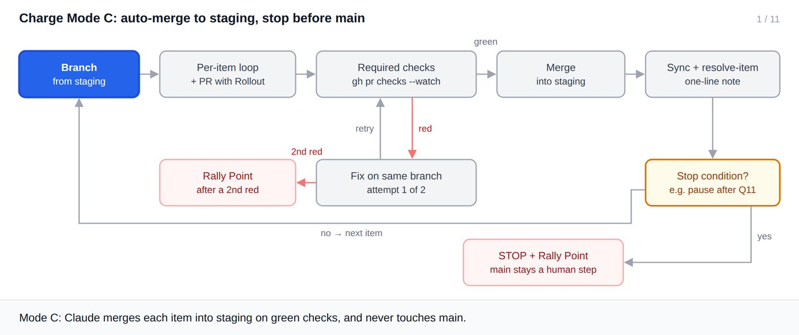

Phase 3
Charge
The queue, one item at a time: a failing test first, a branch and a PR per item, and nothing that touches production.
Before the first item
A coupling pass lists the files each item touches and orders the queue so producers come before consumers and shared-file items sit together. The order is saved as Queue order.
The per-item loop

1 / 11
Choosing a mode
| Mode | Say | Behaviour |
|---|---|---|
| A · strict-sequential | nothing: every run starts here | Opens a PR and waits for you to merge it |
| B · stacked | "continue without waiting", "work through the rest" | Branches each item off the previous unmerged one; you merge in order |
| C · auto-merge to staging | "merge to staging yourself", or "use Mode C" | Waits once for required checks; merges to staging on green; stops before main |
Say the mode."Keep going" is listed as a trigger for both Mode B and Mode C. Name the one you want.

Mode C, step by step

1 / 11
Stop conditions and Rally Points
Set a stop point ("pause after Q11", a time, a count), or ask it to stop before any item whose Deploy isn't code-only. Every halt writes a Rally Point: what merged, what's pending, and a ⚠️ list of what you must do, in Deploy order.
Edge cases
| Situation | What Cavalry does | What you do |
|---|---|---|
| A new session | Starts in Mode A, whatever the log says | Name the mode again |
| Checks red twice on one item | Halts with a Rally Point | Investigate |
| No required checks configured | --watch --required has nothing to wait on | Make the test job required |
| An item needs a production step | Records it in Deploy for Breach | Nothing |
| You merged a PR by hand | Status shows drift and the fix command | Run the printed resolve-item |
| A scripted edit removed a function | cavalry-decl-diff exits 1 and names it | Restore it before tests |
Real output: decl-diff catching two lost declarations
$ cavalry-decl-diff src/BulkEmailModal.tsx removed: handleReset removed: mailtoUrl added: sendBatch 4 declarations, 2 removed — check this was intended before running tests [exit 1]